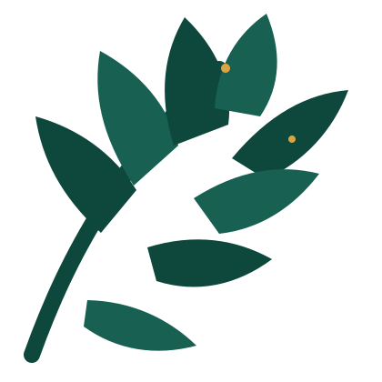

Música
Música do Lual
O vídeo toca aqui dentro e só começa quando você apertar o play.

Paróquia
Santo Inácio de Loyola
08 de agosto de 2026
Santos Jovens: Luzes que brilham para Cristo
A santidade também é para os jovens.
Esta noite continua
Reviva o Lual
Uma foto principal e outros registros para deslizar para o lado.
Outros registros
Deslize para o lado ou use as setas.
As fotos serão disponibilizadas após o evento.
Luzes que brilham para Cristo
Pessoas que viveram sua juventude com coragem, alegria e amor por Cristo.
Os santos serão carregados em instantes.
Sons que permanecem
Escolha uma música e assista sem sair desta página.
Música
O vídeo toca aqui dentro e só começa quando você apertar o play.
Escolha outro vídeo
A seleção muda o player principal.
Os vídeos serão adicionados em breve.
Depois do Lual
Separe alguns minutos do seu dia para ficar em silêncio, conversar com Deus e agradecer por tudo o que você viveu.
“Permanecei em mim e eu permanecerei em vós.”
João 15,4
Deixe sua luz acesa
Deixe uma mensagem de fé, carinho, gratidão ou encorajamento para o nosso mural.
Formulário em breveMensagens que mantêm a luz acesa
Todas foram moderadas antes da publicação.
As primeiras mensagens aprovadas aparecerão aqui.